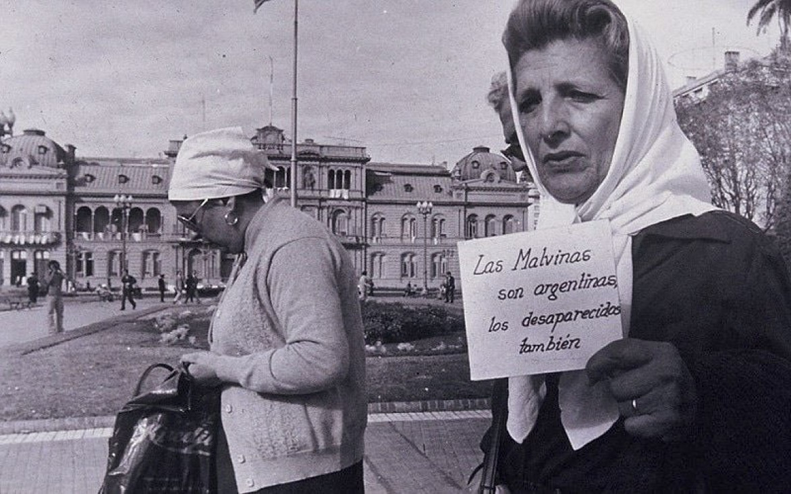

¿Qué es este proyecto?
Este portal busca preservar y difundir la memoria histórica de la Guerra de Malvinas mediante un recorrido georreferenciado por los lugares significativos del conflicto. Cada punto en el mapa representa un hecho, una historia o un testimonio que merece ser recordado.

¿Por qué es importante?
La memoria colectiva es fundamental para construir una sociedad consciente. Este proyecto busca aportar una herramienta educativa e interactiva que permita a las nuevas generaciones conocer los eventos que marcaron nuestra historia reciente.
Explorá el mapa interactivo
Accedé al recorrido interactivo y descubrí los puntos históricos marcados en el mapa:
Ir al mapa